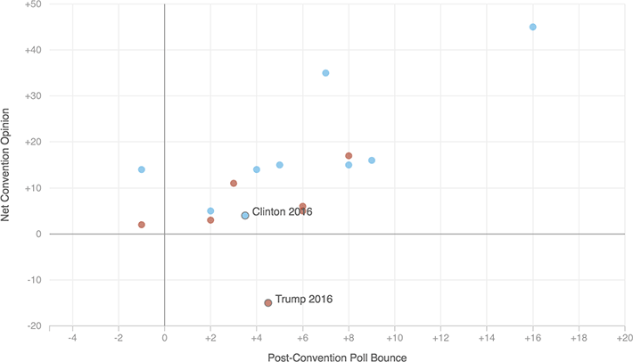

Do Better-Received Conventions Mean Bigger Polling Bounces?
The below chart shows how much conventions have affected public opinion (the percent of people who said the convention made them more likely to vote for the candidate minus less likely), against each candidate's post-convention poll bounce. There's a moderate positive relationship, but Trump is something of an outlier.

Notes
For Trump and Clinton's bounces, we took candidates' percentage-point jumps in the median of four polls that happened shortly before and after the RNC and the DNC alike: CBS, CNN, Morning Consult, and YouGov.